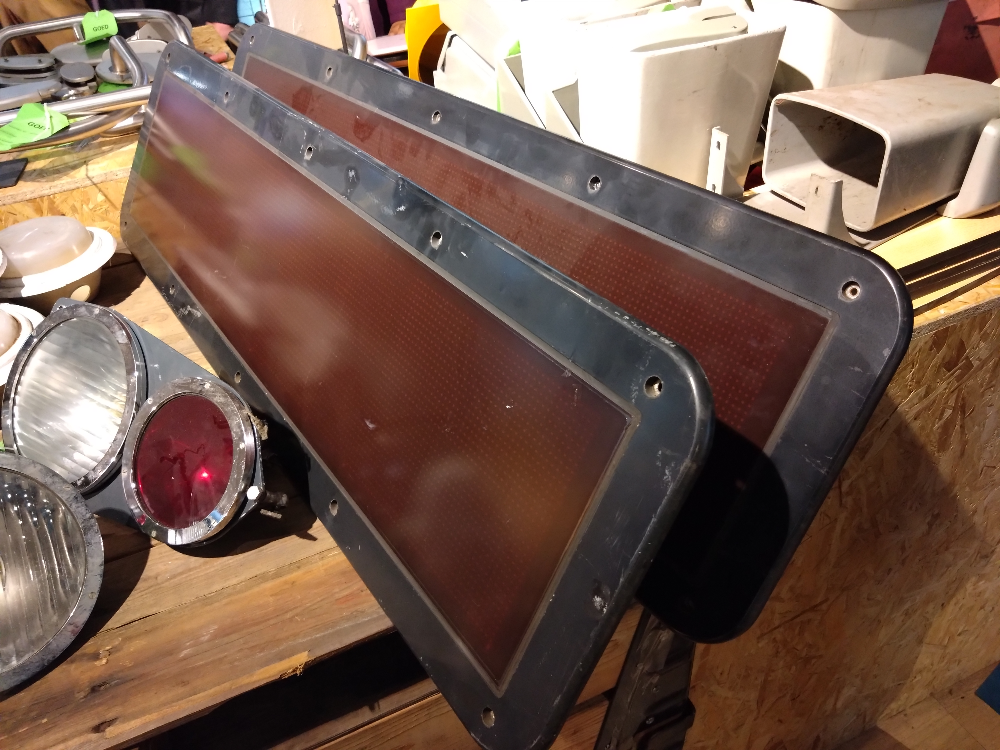
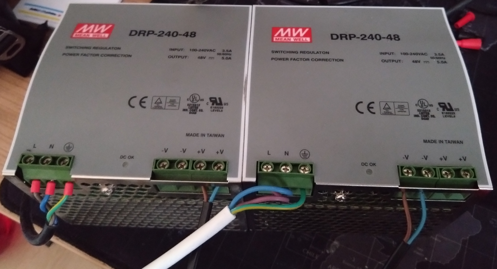
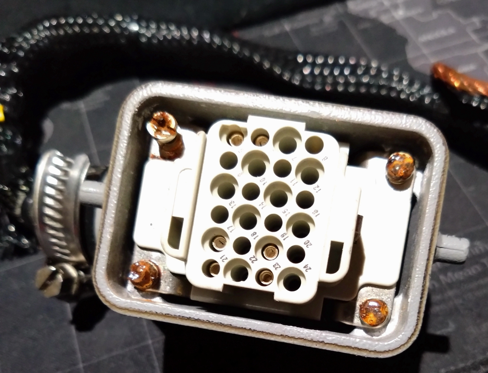
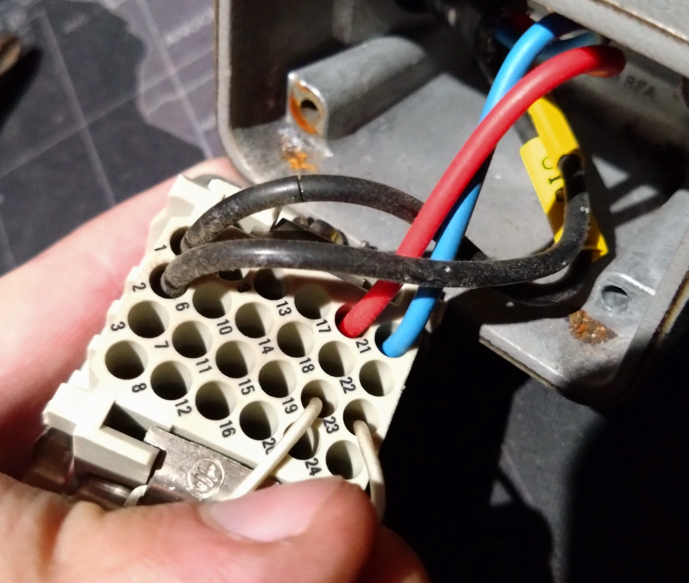
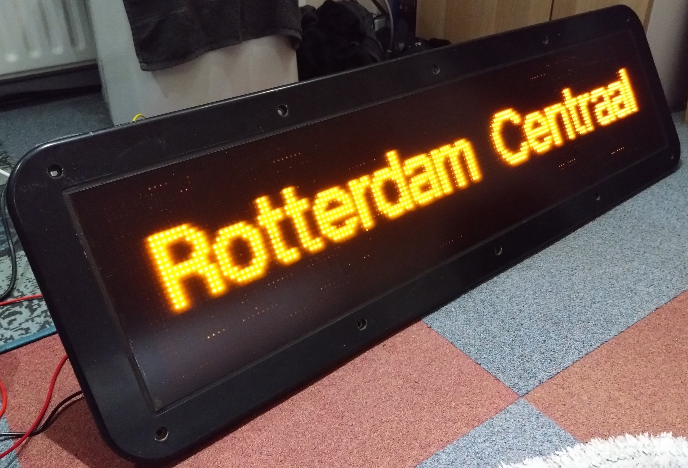
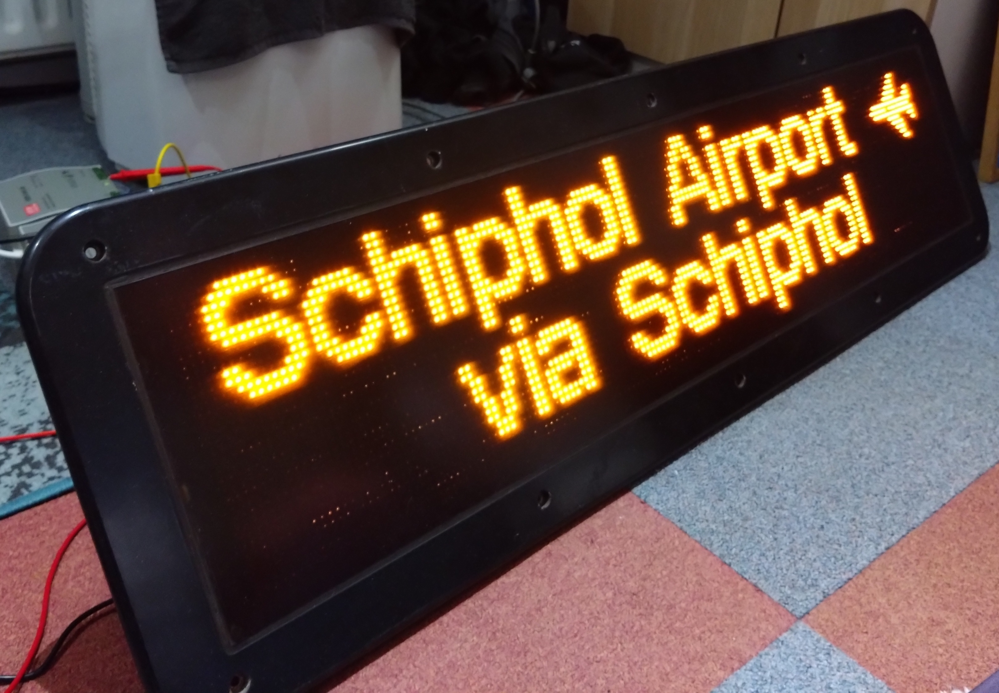
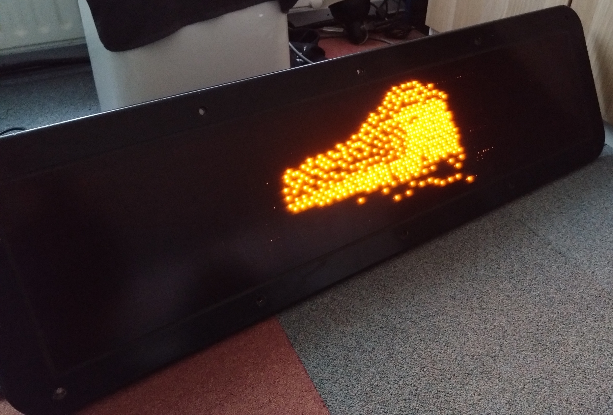

Getting an ICMm display to work
 Recently, I managed to get my hands on the destination display of an NS ICMm train. It is also known as the Focon Electronic Systems A/S 800313–02 ("External Side Display (ESD)"), Or the NedTrain YA082984 or YA08298C. I have the latter. It is a 160x32 pixel dot matrix with orange LEDs, has a built-in codepage-850 character set, and can be controlled via an RS485 interface.
Show me the guide and pretty pics!
DISCLAIMER
The following project involves HIGH VOLTAGE. It can be lethal if proper precautions are not taken. These
displays are in an unknown state until you power it on.
This project is done AT YOUR OWN RISK! Do not come crying to me if you burned down your house or got
shocked. I
only kinda sorta know what I am doing.
I know this much:
- UNPLUG FROM THE WALL if you need to do something with or near the wires.
- USE THE ONE HAND RULE if you must keep it live. Keep one hand behind your back while working with live electronics.
- USE AN EARTHED POWER SUPPLY AND EARTH EVERYTHING THAT HAS AN EARTH, so that your breaker hopefully pops before you get cooked.
- KEEP A CLEAN WORKSPACE. stray wires or metal tools will destroy things.
- SEPARATE V-, V+ AND EARTH FROM EACH OTHER. If these touch, you will most likely set fire to your house, pop a breaker, or pop a fuse.
TL;DR: be most careful, do it at your own risk, or don't do it at all.
Powering the display
  
It requires between 77 and 137.5 volt DC, at around 0.5–1 amp to operate. For this, I am using two Mean Well
DRP-240-48 power supplies connected in series to get 96VDC.
If you wish to do the same, get power supplies with isolated V- (it must not be connected to earth). You can
get
some for around 55 euros each. Make sure they also have overcurrent protection.
Alternatively, you could use a variac and rectify the output. Or just get a 100VDC power supply instead, but
those are expensive.
Assuming you got it with the Harting connector and a bit of cable, hooking it up is not too difficult. The
power
wires are both unfortunately black. Use a continuity tester to find the V+ wire.
Use the pinout as listed here
or here.
Both of these should be correct. Mark the V+ wire with a small piece of tape. Hook the wires up to your
power
supply, optionally with a decent extra wire and Wago connectors, if the cable is too short.
Also REMEMBER TO CONNECT THE EARTH WIRE TO THE CHASSIS GROUND OF THE POWER SUPPLY! (So please, for the love
of
god, not to V-).
Connecting an RS485 interface
 RS485 is an industrial serial protocol, used for connecting devices in a larger structure, like a train.
Everyone implements it a little differently, but the wiring is the same.
Unless you are rich, and you have a Field PG or similar industrial laptop, you will need to buy a dongle. It
can
be basically any RS485 dongle, but I had good luck with the Waveshare RS485(B) dongle.
They can be had for relatively cheap, around 10–20 euros. The Harting connector also has a cable, which has
a
sleeve (ground) and two wires, a red one and a blue one.
For my Waveshare, the red one connects to A+, and the blue one goes to B-.
RS485 is an industrial serial protocol, used for connecting devices in a larger structure, like a train.
Everyone implements it a little differently, but the wiring is the same.
Unless you are rich, and you have a Field PG or similar industrial laptop, you will need to buy a dongle. It
can
be basically any RS485 dongle, but I had good luck with the Waveshare RS485(B) dongle.
They can be had for relatively cheap, around 10–20 euros. The Harting connector also has a cable, which has
a
sleeve (ground) and two wires, a red one and a blue one.
For my Waveshare, the red one connects to A+, and the blue one goes to B-.
Installing software
There is an excellent utility already available, which can play with most of the features of the display.
I would recommend installing it on a sacrificial computer first, in case something wasn't wired properly.
This process was a bit vague for me, but this is what eventually worked for me:
- Install Python from the Python website.
- Install pyserial, crcmod, and pillow. In a terminal, you can do
pip install pyserial crcmod pillow. You might need to prependpython3 -m. - Download focon-util as a zip from here and unzip it to a convenient location.
cdinto the folder using a terminal and runpip install .(Do not forget the period).
First power up
Double-check your connections a thousand times at least. There are approximately 500 of these at the time of
writing, so you could say they're pretty damn uncommon.
Done checking? Okay, go ahead, plug it in. First the USB dongle, then the power. Nothing should happen.
Go to the device manager or whatever and note the COM port number of your dongle. It should be something
like
COM3 or COM4.
In your terminal, run focon-util -d COM* display info where the * is the COM port number. If it
works, you should see a bunch of text in the terminal.
If nothing happens, you either misconnected something, or the display has a different ID. Refer to the docs
of
the software for more information.
Let's see if the LED matrix actually works. Run focon-util -d COM* display selftest info and
watch
the display. It should start throwing some text on the screen, followed by a bar that scrolls from right to
left.
To exit the selftest, run focon-util -d COM* display selftest abort
Let's have some fun!
Draw some text!

Assuming it works, let's print some text on the display: focon-util -d COM* display print "Rotterdam
Centraal"
Or make it scroll: focon-util -d COM* display print "Hello, world!" -T scroll
How about the other way? focon-util -d COM* display print "Hello, world!" -T right-scroll
Or align it to the top left: focon-util -d COM* display print "Hello, world!" -a top-left
Getting multi-line text is a bit of a challenge on Windows, but you can try in PowerShell: focon-util
-d
COM* display print "Venlo (do shift+enter) via Schiphol ✈️"

Yes, the aeroplane emoji works. You might also notice a nasty square on your bottom row now. This is a bug.
You
can pad the "via Schiphol ✈️" part with spaces so it goes away.
By default, the object ID is set to 255, but you can assign one by appending -i * where * is
the ID
you want to use. You can then reuse this object with focon-util -d COM* display redraw *
There is a lot of stuff to play with. Read the docs, play around, and have fun!
Draw some images!

You can fit 160x32 or smaller images on the display. My recommendation is to keep them simple. Use high
contrast, preferably only black and white. The script can do shading, but it looks awful up close.
You can draw the image using focon-util -d COM* display draw path/to/image.xxx and it supports
PNG
and JPEG and probably other formats too. Effects with the -T flag work, but alignment does not.
As long as the image falls within the borders of the display, you can position it with coordinates using
-x
* -y * flags.
Something fun: push two images to the display, giving them different IDs and not making them overlap. Then,
redraw both images using focon-util -d COM* display redraw * * * where the stars are different
IDs.
Wrapping up
If you followed this guide, hopefully you now have a working display. If you do, congratulations! If not,
please
don't be discouraged. I'm sure you'll figure it out.
I found it alluring to figure out how much stuff is going unused while these are bolted to the side of a
train,
and I am stoked to try out everything there is.
Where do I go from here? I'm already working on scripts to display all kinds of fun stuff (including
animated
GIFs), and I have found a reason to learn drawing pixel art.
Now I really want a flip dot display to go alongside this one, but it will probably be a while until I can
get
my hands on one of those.
I owe a huge thanks to KaNS Centraal for selling
decommissioned train parts like this one, to Shiz for the software,
and to everyone else on the internet who figured out the pinouts and everything else.